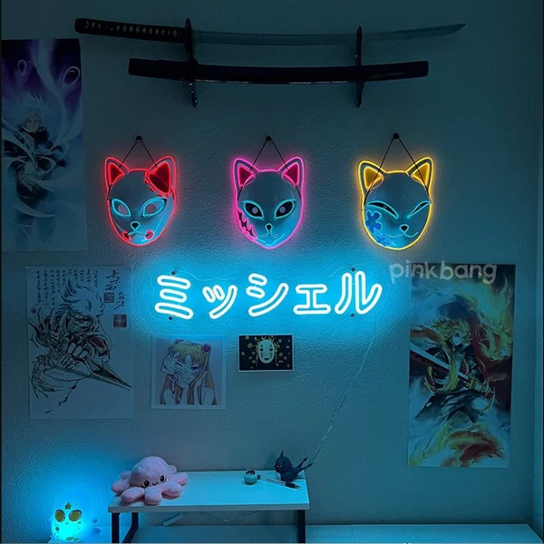
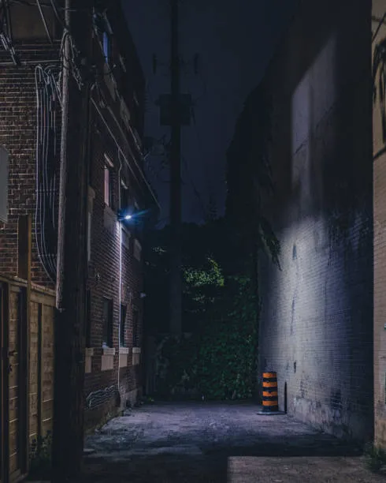
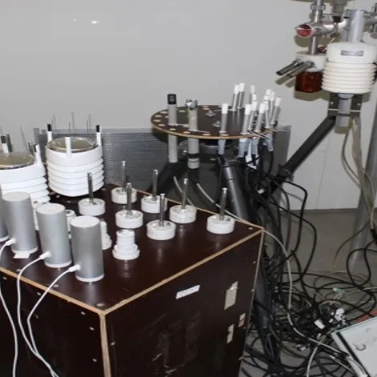

PC
- CPU: RYZEN 5 5600
- GPU: RX 7900 GRE HELLHOUND
- RAM: Lexar Thor 3600MHz, 2x16
- PSU: ASUS ROG STRIX 750G
- MOBO: ROG STRIX B550-F GAMING WIFI II
- CASE: LIAN LI LANCOOL III BLACK
- COOLER: ARCTIC FREEZER 34 ESPORTS DUO
- STORAGE: Lexar NQ790 1TB M.2 // LEXAR NM710 1TB M.2
Peripherals
- Microphone: RAZER SIREN MINI
- Mouse: RAZER BASILISK V3
- Mouse Pad: X-KOM G4M3R PRO
- Keypad: WOOTING UWU RGB
- Keyboard: RAZER HUNTSMAN V2
- Headphones: RAZER KRAKEN KITTY
- Controller: XBOX SERIES-X BLACK
- Tablet: WACOM 4100 // HUION H640P
- Monitor: LG 34WP75C *2
Workspace
- Desk: Ultradesk Frag XXL
- Chair: Ikea Markus

Grind & Glory
Idealne na wieczory przy RPG-ach i grindzie. Od metalowych kawałków po instrumentalne soundtracki.
Otwórz Playlistę

Weeb Energy Jams
Pełne anime i dynamicznej energii. Idealne, gdy chcesz poczuć się jak w openingu swojego życia.
Otwórz Playlistę

Recycle Bin Reloaded
Mroczny, polski vibe. PRO8L3M na maxa, a także klasyczne rapowe brzmienia, które przywołują nostalgię.
Otwórz Playlistę

The Prototype
Playlista testowa – miejsce na eksperymenty i nowe odkrycia. Nic nie jest tu na stałe.
Otwórz Playlistę